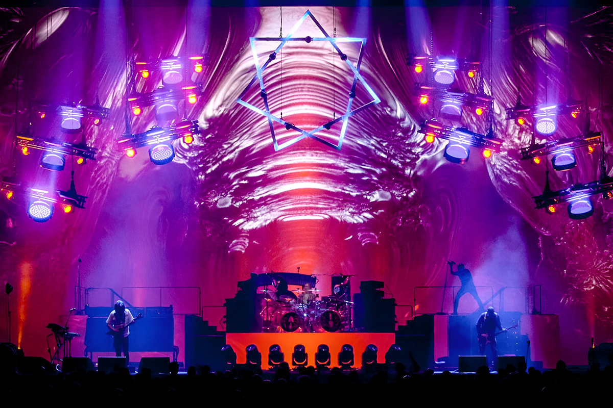
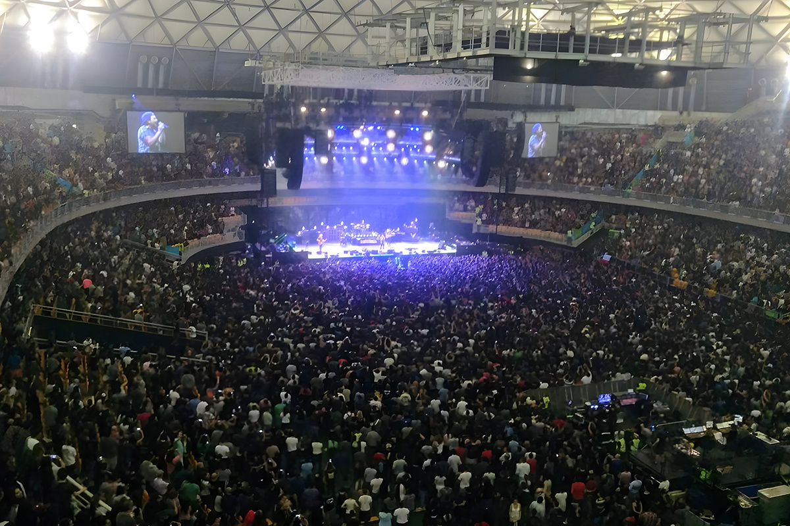
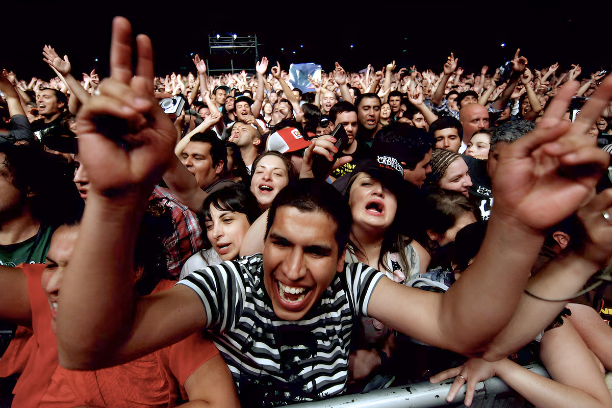

Tool y la economía
¿Qué relación tienen?
¿Qué relación tienen?

Hace un tiempo, más precisamente noviembre del 2024, se anunció que Tool tocaría en el Movistar Arena. Las filas virtuales se colapsaron para lograr conseguir una entrada e inmediatamente todo se agotó.
Si eres fan de este grupo musical, lo que te acabamos de contar ya lo sabías, pero lo que te vamos a decir ahora capaz no lo habías pensado.

Cuando una banda de envergadura internacional decide aterrizar en un país, son muchos los factores que se mueven. Primero las plataformas de venta de tickets, estas suelen ser nacionales, por ende ya ingresa dinero desde allí. Luego empiezan a desplegarse varios frentes como:

Hasta aquí enumeramos varios puntos en los que nos muestra como un simple show hace que la economía se mueva. Parece algo menor, pero debemos tomar a Tool como ejemplo y referencia de otros shows que se realizan en Chile. Todos conservar una lógica parecida en cuanto a movimiento y consumo.
Además, no solo el movimiento es económico, también es cultural, algo que es realmente importante dentro de los consumos para hacernos felices.

Chile se ha convertido en un destino clave para grandes giras internacionales, y eventos como el concierto de Tool refuerzan esta posición. Cada vez más artistas eligen incluir al país en sus recorridos sudamericanos, consolidando a Santiago como una plaza esencial dentro del circuito de conciertos.
El efecto no termina con el último acorde. Estos eventos promueven la imagen del país como un destino atractivo para el turismo cultural, dejando una huella que puede atraer nuevos visitantes en el futuro.
En definitiva, la visita de Tool no es solo un momento inolvidable para sus seguidores, sino también una oportunidad para dinamizar sectores clave de la economía local. Más allá de la música, su llegada representa una sinfonía de beneficios para todos.
¿Qué conciertos crees que han marcado un antes y un después en la escena musical del país?
 Finanzas
FinanzasSi últimamente has abierto LinkedIn, probablemente lo has visto: parece que todos hablan del “futuro del trabajo”.
 Finanzas
FinanzasChile no está en el Mundial 2026. Ya lo sabemos, ya dolió, ya hicimos memes tristes y nos resignamos a ver la Copa del Mundo desde la casa.
 Finanzas
FinanzasHace casi dos años me vine a vivir a Italia y llegué con una idea muy instalada en la cabeza: que todo iba a ser mucho más caro que en…